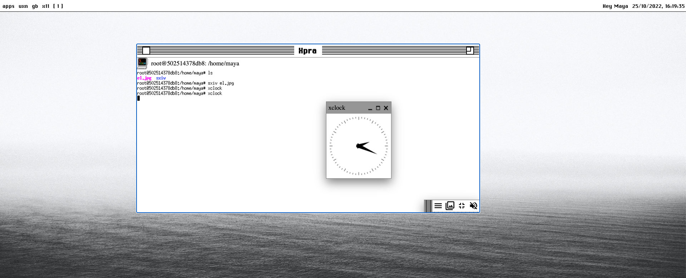

So what are the options to run x11 in the browser? The closest thing I have found (that is currently working) is to connect remotely to a running X11 server. It can be a server, a docker container, or other similar things. Then we can run Xpra or VNC to connect to it with a browser. So technically we are not running X11 in the browser but just having a window to X11 server. Does it work? Yes. Is it what I am looking for? Not really.
> youtube video on accessing x11 server remotely
Xpra running in jswm

The limitations of such solutions are that I am running just whole another virtual system with its own disk volume and a desktop on top of it. So to integrate it with jswm I would have to write interfaces.
The next step for me would be to look into CheerpX.
Xorg + xeyes running on CheerpX, our X86 virtual machine for WebAssembly. Another milestone toward running anything in the browser. Xorg itself is running virtualized in CheerpX. The browser provides Input/Output devices for Xorg in this case.
It sounds interesting, although I am worried that this approach would cause a massive memory spike if I run a couple of apps alongside each other that each spin up X11 server.